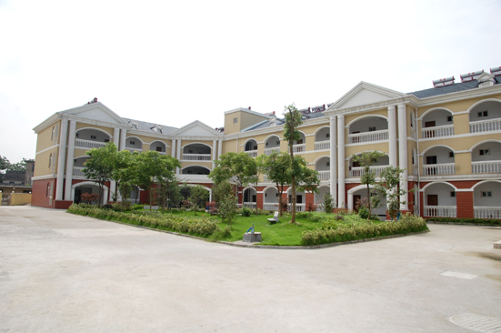

嘉兴市文物保护网 · 市级文物保护单位 · 2014-06-13 · 原文

步云遗址位于嘉兴市南湖区大桥镇花园村花园社区，原貌大致呈方形，占地面积约4700平方米。现遗址范围内土地被敬老院和塑料厂、帽服饰厂等占用，早期地形、地貌已无法辨认。据以往调查资料记载，遗址分布面积较广，东西约60米，南北30米，原文化层厚约40厘米，曾出土有孔石斧和一些陶片，属新石器时代良渚文化遗物，也曾出土过印纹陶器和石斧、石刀等春秋战国时期遗物。现由于环境破坏较严重，尚未找到明显文化层。该遗址具一定规模，延续时间长，有较高的历史和科学价值。1981年公布为嘉兴市级文物保护单位。